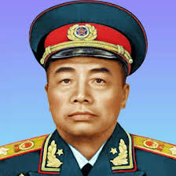

彭德怀
彭德怀（1898—1974），湖南湘潭人，中国人民解放军高级将领、杰出的军事家和无产阶级革命家。他长期从事军事指挥工作，参加北伐战争、抗日战争和解放战争，为中国革命和国家建设作出了卓越贡献。
彭德怀以刚毅、果敢著称，注重实战和战术创新。他在战争中严格训练部队，关心士兵生活，赢得了广大官兵的尊敬。他的军事才能对中国人民解放军的建设发展产生了深远影响。
在家庭生活中，彭德怀强调勤俭、诚实、严以律己的家风。他教育子女要忠于国家、勇于担当，注重品德培养和实际行动，将个人成长与国家、民族紧密结合。
彭德怀的家风和革命精神，成为湖南乃至全国红色教育的重要资源。他的事迹和家风影响深远，激励了一代又一代青年为国家富强和民族振兴而奋斗。
← 返回中国地图